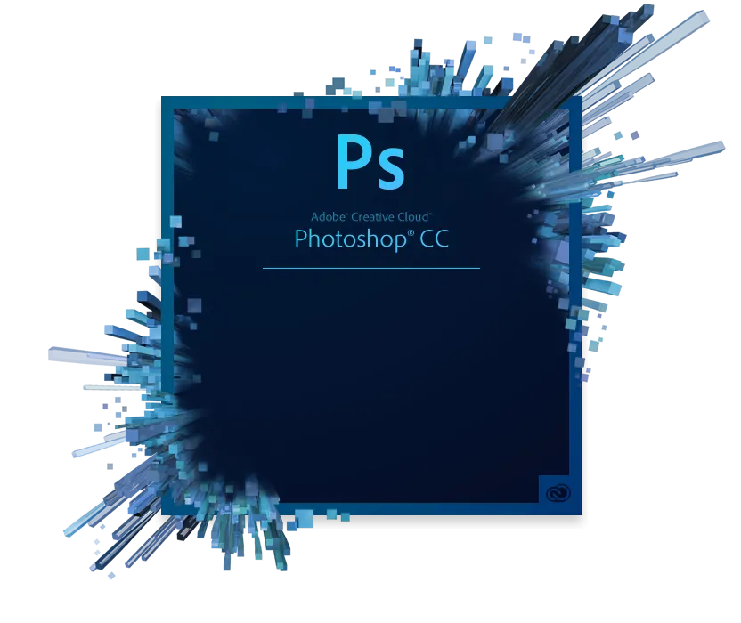

计算机专业
PS图片处理:
年龄段：7岁以上
学历要求：小学学历以上
PS就是图像处理软件，全称为Adobe Photoshop。Photoshop主要处理以像素所构成的数字图像。
PS有很多功能，可分为图像编辑、图像合成、校色调色及功能色效制作部分等。PS软件使用众多的编修与绘图工具，可以有效地进行图片编辑工作。
PS软件的应用如下：
1、在平面设计中的应用
Photoshop的出现不仅引发了印刷业的技术革命,也成为图像处理领域的行业标准。在平面设计与制作中,photoshop已经完全渗透到了平面广告、包装、海报、POP、书籍装帧、印刷和制版等各个环节。

2、在界面设计中的应用
从以往的软件界面、游戏界面，到如今的手机操作界面、MP4和智能家电等，界面设计这一新兴行业伴随着计算机、网络和智能电子产品的普及而迅猛发展。界面设计与制作主要是用 Photoshop来完成的，使用 Photoshop的渐变，图层样式和滤镜等功能可以制作出各种真实的质感和特效。
3、在插画设计中的应用
电脑艺术插画作为时代的先锋视觉表达艺术之一，其触角延伸到了网络、广告、CD封面甚至T恤，插画已经成为新文化群体表达文化意识形态的利器，使用 Photoshop可以绘制风格多样的插画和插图。
4、在网页设计中的应用
photoshop可用于设计和制作网页页面，如下图所示。将制作好的页面导入到 Dreamweaver中进行处理,再用Flash添加动画内容，便可生成互动的网站页面
© 2021----2023 追吻辰星